Reuní a equipos de distintas áreas para ponerse en los zapatos del cliente y proponer mejoras a cuatro modelos de Asistentes de Compras, con foco en tráfico, experiencia y posventa.
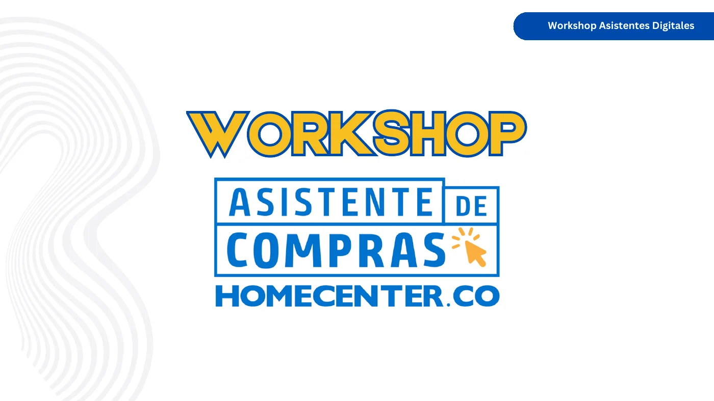
Identificar nuevas funcionalidades para el backlog de 2025.
Cuatro modelos de negocio de Asistentes que cada equipo tomó como punto de partida.
Empatía, ideación con “How Might We”, intercambio entre equipos y presentaciones.
Cuatro propuestas, insights comunes e ideas que entraron al backlog de 2025.
Fomentar la innovación para identificar nuevas funcionalidades de los Asistentes Digitales que puedan integrarse al backlog de 2025.
Que más personas encuentren y abran los Asistentes desde el home, las categorías, las redes y el buscador.
Que usar el Asistente sea rápido, claro y con menos fricción en web y app.
Que el proceso continúe después de la compra: seguimiento, cambios y reseñas.
Armé la dinámica completa: rompehielos, enfoque, actividad principal, intercambio, presentaciones y discusión, con equipos mezclados entre áreas.
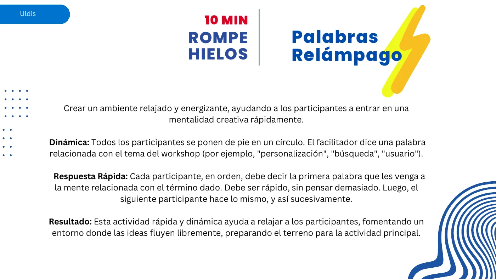
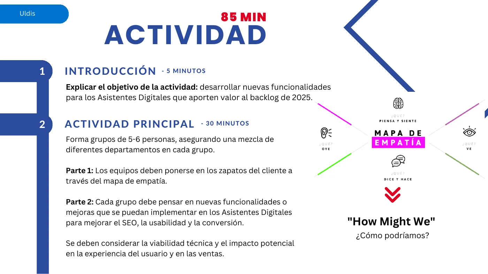
Ver el problema desde lo que el cliente piensa, siente, dice y hace.
Cómo lo apliquéCada equipo se puso en los zapatos del cliente de un modelo de Asistente antes de idear.
Convertir un problema en una pregunta abierta de diseño.
Cómo lo apliquéLos equipos se preguntaron cómo mejorar tráfico, experiencia de usuario y posventa.
Enriquecer una idea con la mirada de otro grupo.
Cómo lo apliquéUn vocero llevó las ideas a otro equipo, que las agregó, refinó o cuestionó.
Antes del taller ordené los Asistentes en cuatro modelos, para que cada equipo diseñara sobre uno concreto. También presenté el desempeño del año, que aquí no publico.
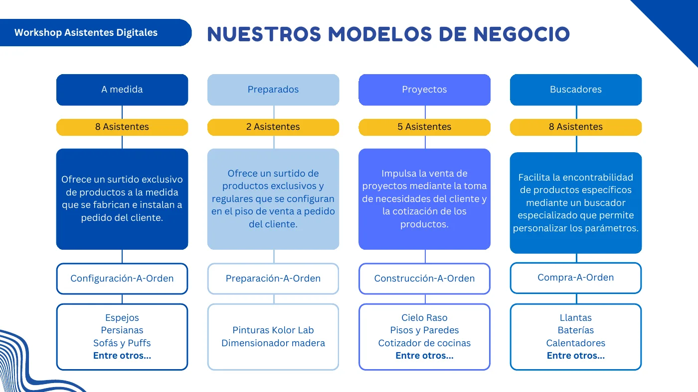
Productos fabricados e instalados a pedido del cliente.
Productos configurados en el piso de venta a pedido.
Toma de necesidades y cotización de un proyecto completo.
Buscador especializado para encontrar productos específicos.
Mezclé personas de distintas áreas en cada grupo para que la viabilidad técnica, el impacto en la experiencia y el impacto en ventas se discutieran a la vez.
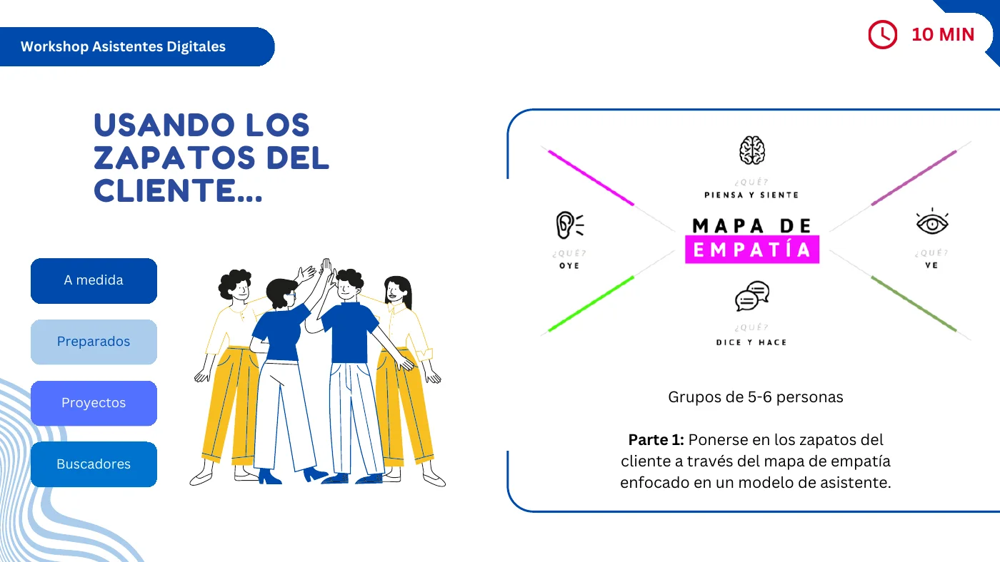
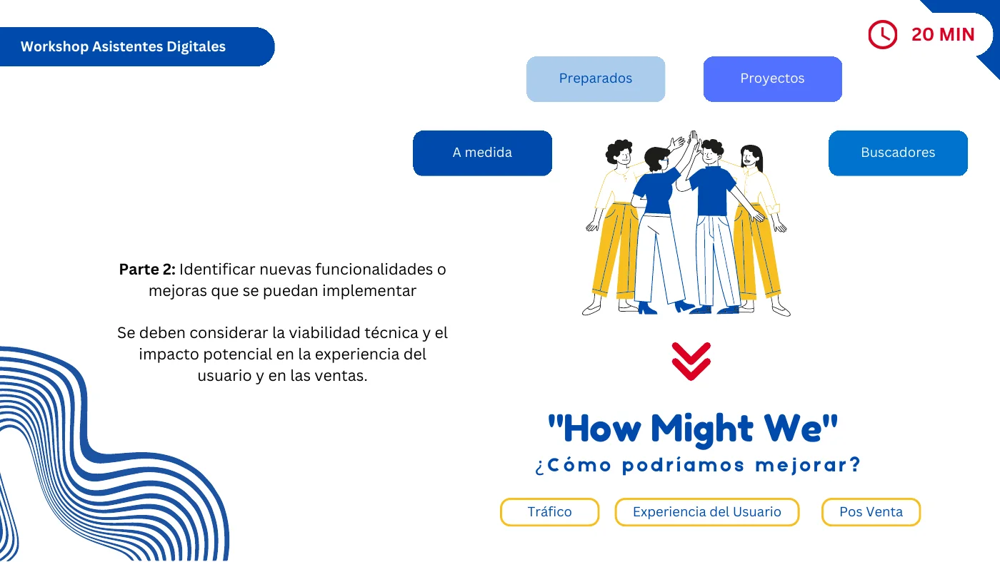
Cada equipo trabajó sobre un modelo de Asistente y pasó por cuatro momentos.
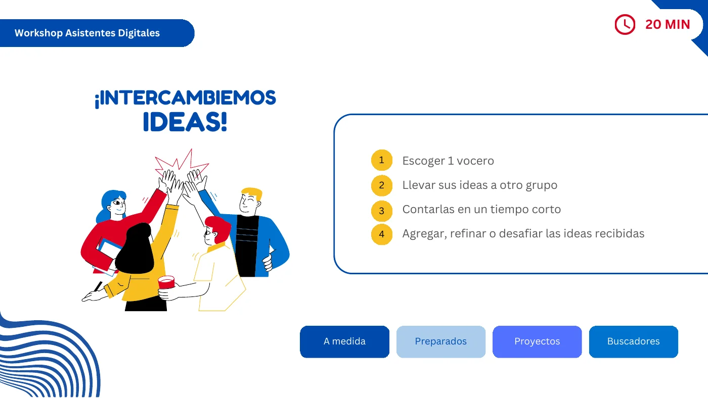
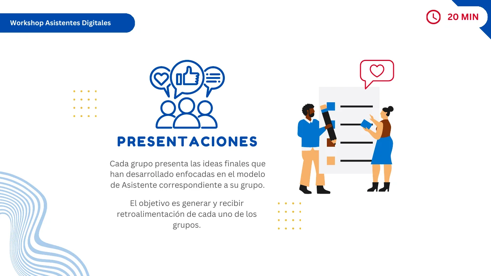
Cada equipo cerró con una propuesta final para su modelo de Asistente.
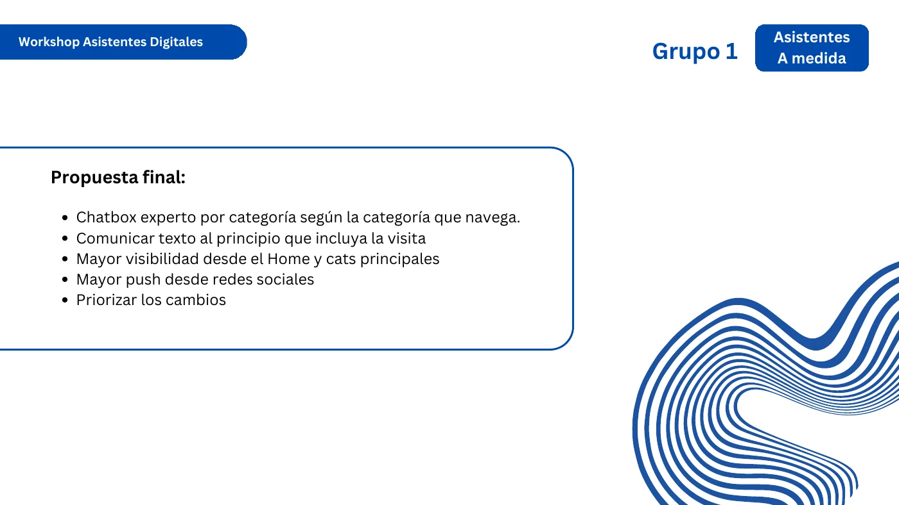
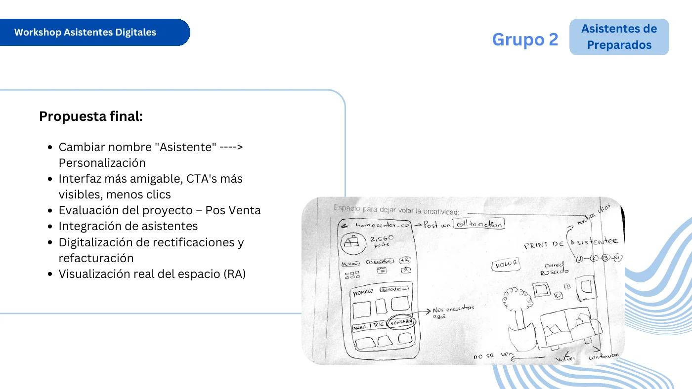
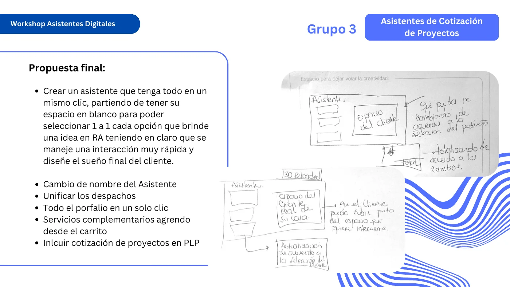
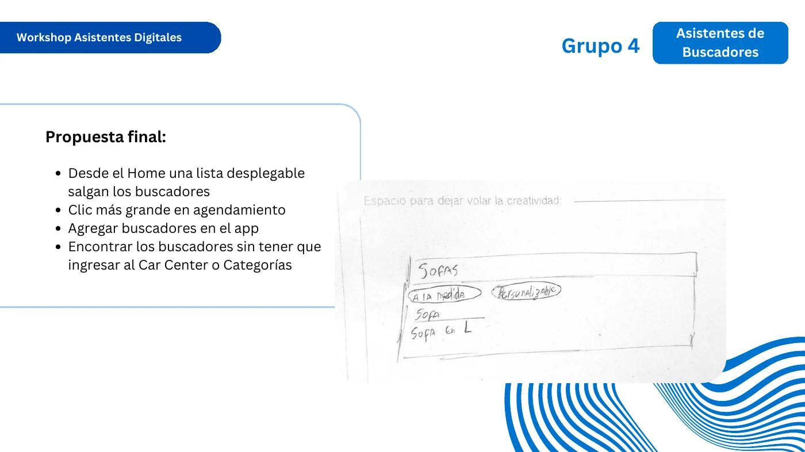
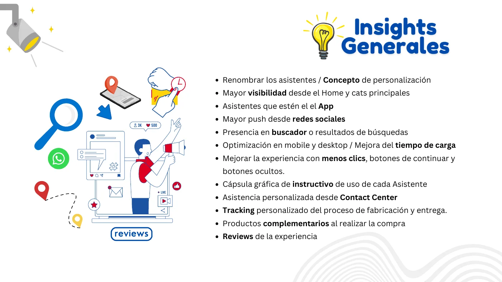
Varios equipos propusieron renombrar los Asistentes y hacerlos más visibles desde el home.
Varias ideas del taller se incorporaron al backlog de 2025.
Producto, comercial, contenidos y mercadeo discutieron juntos viabilidad, experiencia y ventas.
Por confidencialidad no publico las cifras internas de desempeño ni de ventas que se presentaron en la sesión.